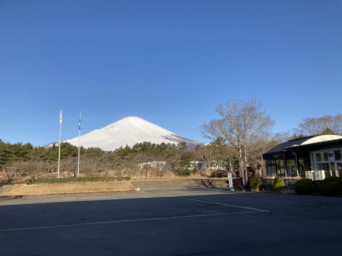

数物セミナーの終わりの電車の車内でこれを書いている． この書き出しは，おそらく数物セミナーを知ったきっかけである， このブログ のオマージュである．
二度目であり，一般参加者としては初めての数物セミナーだった． 今年は余裕もあり，やったことのない分野をやってみようと，固体物理班で希望を出し，無事通った． 参加者を見て驚いたのだが，東大の1年生のhさん，2年生のfさん，東北大の2年生のtさんで1, 2年生で物性ができることにびっくりした． 教科書はSGCの加藤さんの物性物理の本で，1~4章を予習して当日は線形応答理論と超伝導をやることになった． 一人で予習をするのは辛いので，5日に一度ほど集まって，疑問を持ち寄り解決する会をやった． 特にhさんがすごく頭がよいと思っていた．
当初は夜ゼミでSUSYQMと場の理論の初歩をやろうかと思っていたが，RSの予習でそんな暇はなく，1ヶ月で100ページほど読むので，自分の担当範囲の発表原稿が完成するのが数物セミナー初日の前日の夜だった．
場所は前回と同じ静岡の青少年交流の家．
行きしは名古屋でxさんと合流し，集合場所の三島駅に到着した．
集合場所につくと，まずdさんを見つけて話をした．
その後，yさんなどとも会えて久しぶりの会話をしたのち，班ごとに集合した．
本当は班ごとにDiscordの順番に並べると早いのだが，提言するのはおせっかいかと思い控えておいた．
一般参加者なのだから，運営に従っておけば良いのだが，いろいろ口出しをしたくなるのが，自分の悪い所．
各班員は大勢の見知らぬ人の中からあったことのない班長を見つけなければいけないので，自分は何か目印をとサングラスをかけておいた．
他には，RSで読む本を掲げている人もいて，感心した．
三島駅から施設まではバスで移動したが，去年と違い車内での会話が制限されておらず，みんながまちまちの話をしながら移動できたのがよかった．自分はhさんの隣りだったので，自分の話や東大で受けた授業の話しなどを聞いた．
施設につくと開会式．その間にFFだったyさんに連絡をとり，挨拶をする．
開会式が終わり宿泊等に入るのだが，施設から棟の一室の屋根が落ちているという連絡があり，見てみるとかなりの惨状だった．
自分が割り当てられた部屋は和室の13人部屋で布団を敷き詰めたらほとんど場所がなくなった．
例にも依って早めの風呂と食事．
今年は昨年度の1.5倍くらいの人数がいるのに，入浴の時間が1時間しか確保されておらず，混雑することが予想されたので，Hさんに提言し，棟ごとに入浴時間を決めることと，入浴時間を伸ばすことをやってもらった．
一日目最初のRS． 発表はfさんで，線形応答理論の前半．結構時間を気にせずゆっくり喋ったので，この時間では終わらなかった．
1日目だけ天候が悪く，夜には雪が降った．
夜は恒例の進捗部屋． 寝る部屋は和室なのだが，進捗部屋は洋室でみんなベッドの上に座って勉強する．初日はRSがあるからか，ほとんど会話もなくもくもくと勉強を進める．12時過ぎ，そこそこの時間で寝る．
本来は朝の集いがあるはずなのだが，この日は他団体がいなかったので消滅したので，この日は7:00起床で良かった．
午前のRSはfさんの残りが終わり，tさんが半分くらい終わる．
食事を食べた後は，自由時間． nくんと連絡を取り，合う．ちょうどyさんとも仲良くしていたので，連れて行ってしゃべるなど．
午後のRSはtさんののこり半分が終わり，のこり30分くらいでhさんが少しだけやる． RS前半は線形応答理論をやったが，予習不足もありあまりよくわからなかった． 後半超伝導の話だが，hさんはよく調べていて，この30ではデバイ振動数がブリルアンゾーンの体積を保ったまま形を球だと思った近似ということを話してくれて，知らなかったので感心した．
ここからは，他団体が施設を使うのでゆうべの集いがあった． 企業の新卒研修と早稲田の速記サークルが来ていた．
食事と夕食の後は夜ゼミ． 棟の施錠を任され，夜ゼミには遅れて参加． 教室をまわりながら，いろいろな講演を眺めていると，圏論入門をやっている人に呼び止められて聞くことになった． いろいろな講演を聞こうと思っていたし，自分も喋ろうと思っていたので抜けようと思っていた矢先，物理の話が始まり聞き入る． 結局，この日はこれを聞いてほとんど終わってしまった．
夜は進捗部屋に．この日は人が多くて，8個ベッドがある部屋に32人ほどあつまり勉強していて，自分のことを認識している人も多く，楽しく勉強できた． 2日目も24:00くらいに寝る．
数物セミナーの朝は早い． といっても6:30に起き，朝の集いに出る． 2度目の参加だが，前回は低温で集いが消滅していたので，初めての朝の集いだった．朝からラジオ体操をした． 天候がよく，富士山が綺麗に見えた．
午前のRSはhさんの残り． Cooper問題の補足説明やBogoliubov変換などをやる． 30分くらいの残り時間で自分がマイスナー効果をやる．
昼食を食べ，自由時間はRSの発表も終わり，遊んでいる人も多かったが，私は発表が残っているので原稿を読み直し，計算をやり直す時間に当てる． RSはGL理論を話して，時間ぴったりで終わる． ゼミが終わった後，マーカーを本部に返しに行くと， aさんがくりこみの話がされていたので折角の機会だと思い立ち聞きしていた．終わった後いろいろ話して，SUSYQMをやる研究室に行くという話をすると，知らないから教えてくれと言われたので夜ゼミで話しましょうとなった．
yさんから，夜ゼミの発表のため教科書を貸してほしいと言われ夕食時に貸し，一緒に食事を取る． その後，入浴の時間まで予習をする． なかよくさせてもらってたので，いろいろ話せて良かった．
夜ゼミでは，最初はkさんの関数解析の話を立ち見して，yさんのDFTの話を聞いていると，aさんのQCDの話が始まるという情報を得て悩んだ末yさんには申し訳なかったがそちらを見に行った．
aさんはトークがめちゃくちゃ上手くて，喋り方もそうだが話題の取捨選択が適切だったのが感心した．
内容としては，QCDの閉じ込めの相転移のはなしで，
Ising modelとの類似が面白かった．
これが終わると残り時間が15分くらいしかなく，自分も喋ろうと思っていたのでyさんと10分でSUSYQMの話をyさんとsさんにしたが，聴衆的にDiagramの話をしたほうがよかったと反省．
3日目の夜にして，宿泊棟の自販機から大半の飲み物が売り切れて，厳しかった．
夜は，最後の進捗部屋で夜ゼミでトポロジカル絶縁体の講演を聞きたかったが，aさんの講演とかぶっていて残念だったという話をしていると，後ろに講演者がいて話を聞くことが出来た．
その後，nくんのラグビーの話を聞いて，24:00すぎに寝る．
翌朝気づいたことだが，yさんから連絡が入っていて夜ゼミの続きを聞きたいという意図だったらしいが，ちょうど見ておらず後悔した．
6:30に起きて，朝のつどい． 朝ご飯を食べて，部屋を片付けて特別講義へ．
特別講義は二部屋に別れて行われて，特殊関数の話と分光の話を聞いた． 前半はdさんの発表で，数学の人だが物理で扱うような特殊関数を例に，超幾何が親玉にあること，また超幾何は冪関数を展開したときのポッホハンマー記号を増やしたものとして説明されていて，初めて聞いたので勉強し直してみようと思った． 後半はyさんの専門に近いので，終わった後に解説してもらったが，物質の界面を調べることはバルクを調べることに比べて難しいらしい．講演者は実験の立場から氷表面のOHを分光で調べているそうで，yさんに依ると界面においても第一原理計算などがされているらしい．
その後バスで三島まで行って解散．車内では隣に座ったkさんと話す．
自分と同じく，大学に数学の話をする人がいないらしく，数物セミナーでつながりが出来てよかったという話をした．
また，興味があると言っていたので，物理の布教を一方的にしていたら三島についた．
さわやかで昼食を取って帰ろうとしていたのだが，すでに一時間待ちで数物参加者が大量に行くこともあり
断念し，駅前の焼肉屋でnくんやaさんらと食べ放題を食べて解散．
20:30帰宅．